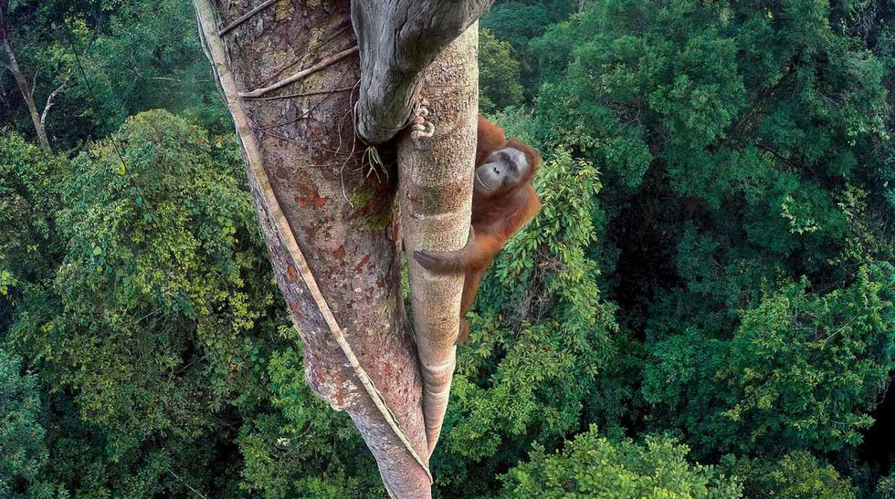
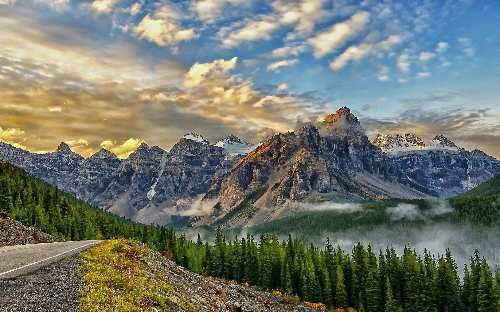

Explora el Mundo con Nosotros
Documentamos la belleza natural y las historias de nuestro planeta.
Descubre másReportajes
Sumérgete en nuestros reportajes de exploración y conocimiento sobre la naturaleza.
La Vida Oculta en los Océanos
Explora las profundidades del océano y conoce la biodiversidad única que habita en estos ecosistemas marinos.
El Impacto del Cambio Climático en los Bosques
Descubre cómo el cambio climático está afectando a los bosques y a la biodiversidad que depende de ellos.
Fotografía
Explora nuestra galería fotográfica, capturada por fotógrafos expertos que documentan la naturaleza en todo su esplendor.

Vida Silvestre

Paisajes Naturales

Montañas Majestuosas
Conoce Nuestro Proceso
Descubre cómo capturamos los momentos únicos de nuestro planeta en video.
Nuestra Ubicación
Haz clic en el botón para mostrar tu ubicación en el mapa.